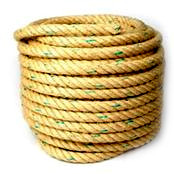
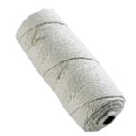
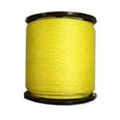
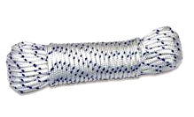

Uso y mantenimiento de cuerdas, mecates y mecatillos
Los mecates, son aquellos cuya mena o grosor es mayor a 5 mm, los mecatillos son aquellos cuya mena o diámetro es menor de 5 mm y mayor de 2 mm. .
Actualmente puedes encontrar mecates y mecatillos de Sisal o Cocuiza, Algodón, Polipropileno y Polietileno y Nylon.

Sisal o Cocuiza… La fabricación en este material, se hace con fibras retorcidas, lo que abarata su costo con respecto a las trenzadas, pero esto trae una notable disminución en la resistencia.
En el caso de las cuerdas o mecates su mena está comprendida entre los 5 y los 60 mm, pero las que más se utilizan son las de 15 a 20 mm.Una buena cuerda posee un cordón en el centro, que se denomina alma.

Algodón… Según la disposición de sus fibras pueden ser trenzados o retorcidos.
Las ventajas de los trenzados, son su resistencia y elasticidad, que suele ser de un 40 a 50% superior al de los retorcidos.
Estas fibras son las más aptas para el teñido, por su color blanco y gran poder absorbente.

Polipropileno y Polietileno… Son muy semejantes en su aspecto interior, no solo entre sí, sino también con las cuerdas de Nylon.
Sus fibras sintéticas evitan que entre en estado de putrefacción y le dan una buena elasticidad.

Nylon… Son los más resistentes que se encuentra actualmente.
La elaboración de ese tipo de cuerdas se basa en la torsión o el trenzado de sus fibras, siendo las segundas de mayor resistencia y calidad que las primeras.
Como hecho comparativo diremos que una cuerda o mecate de nylon de 10 mm de diámetro resiste:
Trenzada => 1.580 kg.
Retorcida => 900 kg.
Tanto las cuerdas o mecates como los mecatillos requieren un mantenimiento mínimo para prolongar su duración
- Deben estar siempre secas, para ello debes secarlas a la intemperie pero jamás exponerlas al fuego.
- Las cuerdas deberán estar enrolladas correctamente y guardarlas en un lugar que no sea húmedo.
- Para evitar que la soga se destrense o descolche, deberás realizar en sus extremos un buen remate.
- Para no confundir las cuerdas o mecates de tu Patrulla con los de otra, puedes teñirlos en sus extremos con los colores de la misma.